More Publications
Read more about our papers and articles
| Title | Journal | Year | Summary | Fulltext | |
|---|---|---|---|---|---|

|
Renewable integration and AI demand reshaped power grids in 2025 | Nature Reviews Clean Technology | 2026 | The importance of renewable integration into grids came to the forefront in 2025. New challenges in stability, storage, artificial intelligence demand and policy changes defined a year that tested whether power systems can become reliable, flexible and equitable in a net-zero world. | SharedIt |
| 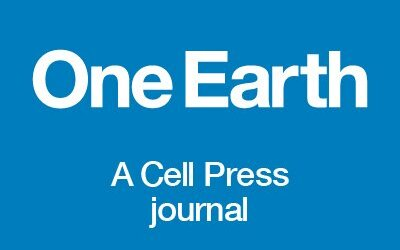 | Imported solar photovoltaics contributed to health and climate benefits in the United States | One Earth | 2025 | Imported solar panels prevented nearly 600 premature deaths and delivered $28 billion in climate and health benefits to the United States. | preprint |

|
Can China break the ‘cost curse’ of nuclear power? | Nature | 2025 | Strengthening regulations and domestic supply chains could be key to making nuclear power more economically viable. | SharedIt |
| 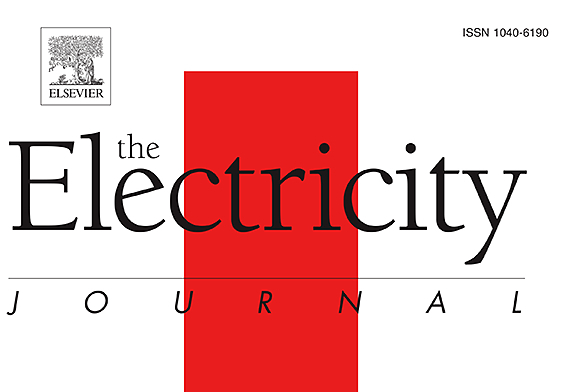 | Role of pumped hydro storage in China’s power system decarbonization | The Electricity Journal | 2025 | Our findings indicate that building excessive PHS may not be the most cost-effective path to achieve zero-carbon power system, if there is no major cost reduction of PHS. | |
| 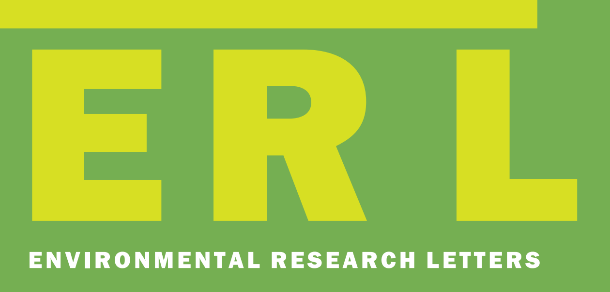 | Cost-effectiveness of removing the last 10-20% emissions of China’s power sector | Environmental Research Letters | 2025 | Eliminating the last 10–20% of CO2 emissions create net climate and health benefits with only slightly increased costs. | |
| Fewer than 15% of coal power plant workers in China can easily shift to green jobs by 2060 | One Earth | 2024 | A coal power worker needs to travel 194 (178–242) km on average to access a green job. Only 11%–14% of existing coal power workers will transition to green jobs by 2060. | ||
| 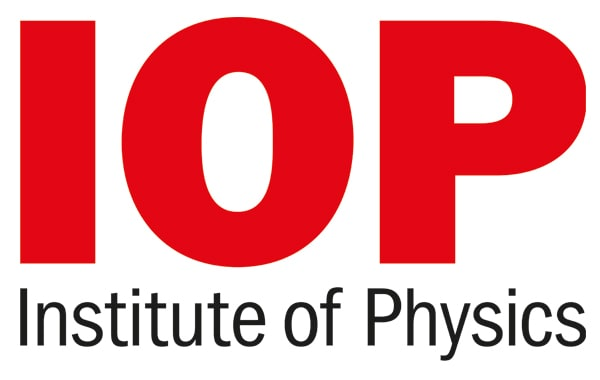 | Regional disparities in health and employment outcomes of China’s transition to a low-carbon electricity system | Environmental Research: Energy | 2024 | Although disparities in health impacts across provinces narrow as fossil fuels phase out, disparities in labor compensation widen with wealthier East Coast provinces gaining the most in labor compensation. | |

|
Advancing a just, resilient, and sustainable clean energy supply chain | ClimateWorks Blog | 2023 | In addressing the challenges and maximizing the benefits, there is a pressing need for a commonly agreed framework for a just, resilient, and sustainable clean energy supply chain. | link |
| Deploying solar photovoltaic energy first in carbon-intensive regions brings gigatons more carbon mitigations to 2060 | Communications Earth & Environment | 2023 | A net GHG mitigation of 1.29 Gt CO2-equivalent from 2009–2019, achieved by 1.97 Gt of mitigation from installation minus 0.68 Gt of emissions from manufacturing. | ||
| Accelerating China’s power sector decarbonization can save lives: integrating public health goals into power sector planning decisions | Environmental Research Letters | 2023 | The value of climate and health benefits would exceed the additional costs, leading to $824 billion net benefits from 2021 to 2050. | ||
| Heterogeneous effects of battery storage deployment strategies on decarbonization of provincial power systems in China | Nature Communications | 2023 | We find heterogeneous strategy provides the lowest system costs, however, carbon emissions depend on carbon prices. | ||
| 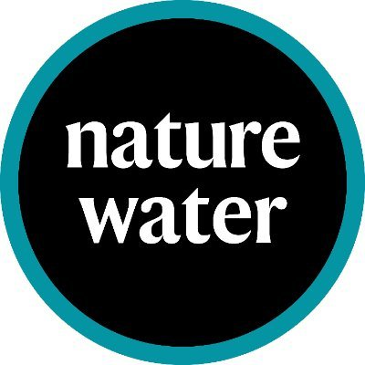 | Global assessment of the carbon–water tradeoff of dry cooling for thermal power generation | Nature Water | 2023 | We build a global unit-level framework to investigate the CO2 emission and energy penalty due to the deployment of dry cooling. | SharedIt |
| 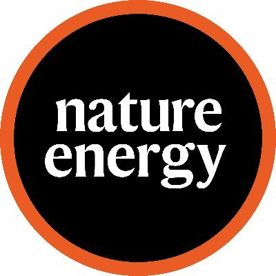 | Climate change impacts on planned supply–demand match in global wind and solar energy systems | Nature Energy | 2023 | Up to 32% or 44% of non-Antarctic land areas for wind or solar, respectively, are projected to experience supply demand match reductions by the end of this century under an intermediate emission scenario. | |
|
|
Quantifying the cost savings of global solar photovoltaic supply chains | Nature | 2022 | Globalized supply chain has saved solar installers in the U.S., Germany, and China $67B 2008-2020, and solar prices will be 20-30% higher in 2030 if countries move to produce domestically. | SharedIt |
| Modeling Integrated Power and Transportation Systems: Impacts of Power-to-Gas on the Deep Decarbonization | IEEE Transactions on Industry Applications | 2022 | Hydrogen could link power and transport systems and reduce costs of deep decarbonization for both sectors. | ||
| 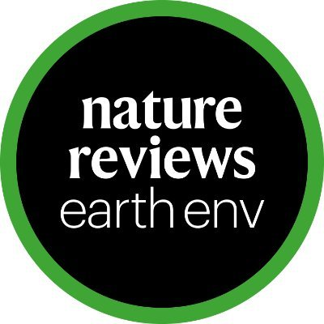 | Challenges and opportunities for carbon neutrality in China | Nature Reviews Earth & Environment | 2022 | In this Perspective, we summarize the key features of China’s CO2 emissions, its reduction processes and successes in meeting climate targets. | SharedIt |
| Large balancing areas and dispersed renewable investment enhance grid flexibility in a renewable-dominant power system in China | iScience | 2022 | Regional balancing could reduce the renewable curtailment rate by 5–7%, compared with a provincial balancing strategy. | ||
| 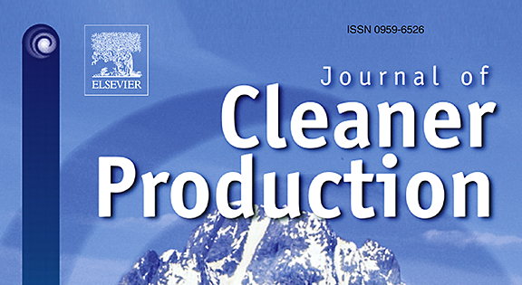 | Long-term transition of China’s power sector under carbon neutrality target and water withdrawal constraint | Journal of Cleaner Production | 2021 | Low cost renewables reduced the need for CCS by 80%, and water constraints nearly squeeze CCS out. | |
| Enabling a Rapid and Just Transition away from Coal in China | One Earth | 2020 | Aggressive coal-transition pathway is needed to achieve carbon nutrality goal while achieving water saving, avoiding premature death. | ||
| Rapid cost decrease of renewables and storage accelerates the decarbonization of China’s power system | Nature Communications | 2020 | A renewable dominant pathway is not just technogical sound, but also cost effective. | ||
| Experiences and lessons from China’s success in providing electricity for all | Resources, Conservation and Recycling | 2017 | Key experiences and lessons to be learned from China’s successful program to provide electricity for all. | ||
| SWITCH-China: A Systems Approach to Decarbonizing China’s Power System | Environmental Science & Technology | 2016 | SWITCH-China, an integrated model for power sector decarbonization. | ||
| Where, when and how much solar is available? A provincial-scale solar resource assessment for China | Renewable Energy | 2016 | We utilized 10-year hourly solar irradiation data from 2001 to 2010 from 200 representative locations to develop provincial solar availability profiles. | ||
| 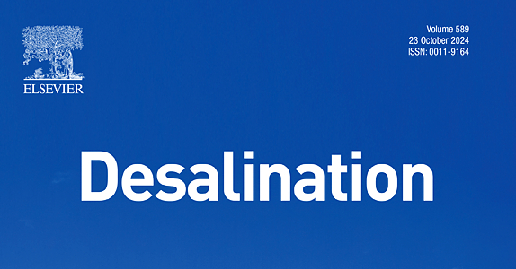 | Assessing the impacts of nuclear desalination and geoengineering to address China’s water shortages | Desalination | 2015 | We compare both coal and nuclear desalination with the currently planned South–North Water Transfer Mega-Project and show that, while the short-run cost of water diversion is lower, critical vulnerabilities and future resource demands favor nuclear desalination. | |
| 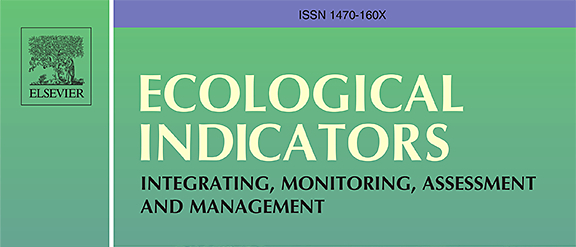 | ELITE cities: A low-carbon eco-city evaluation tool for China | Ecological Indicators | 2015 | ELITE Cities is an Excel-based tool that measures city low-carbon development progress on 33 key indicators. | |
| 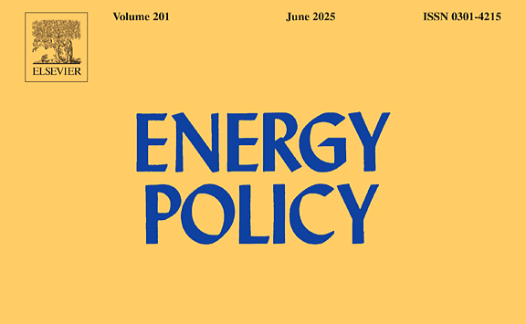 | Where, When and How Much Wind Is Available? A Provincial-Scale Wind Resource Assessment for China | Energy Policy | 2014 | We utilized 200 representative locations for which 10 years of hourly wind speed data exist to develop provincial capacity factors from 2001 to 2010, and to build analytic wind speed profiles. | |
| Addressing carbon Offsetters’ Paradox: Lessons from Chinese wind CDM | Energy Policy | 2013 | The paper examines the application of additionality in the Chinese wind power market and draws implications for the design of effective global carbon offset policy. |
No matching items